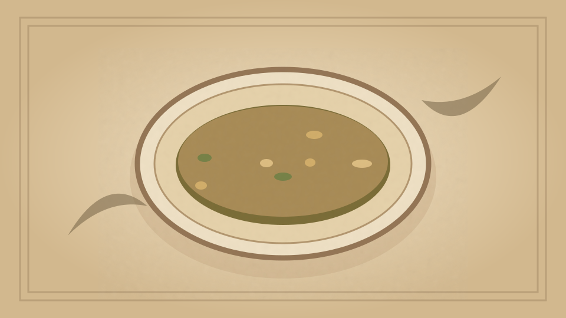

1910 · Fannie Merritt Farmer · SOUPS
Mock Turtle Soup
The Boston Cooking-School Cook Book

Historical Recipe
The following text is extracted from the 1910 edition, retaining historical terminology and quantities.
Original Ingredients & Directions
1 calf’s head
6 cloves
½ teaspoon peppercorns
6 allspice berries
2 sprigs thyme
⅓ cup sliced onion
⅓ cup carrot, cut in dice
2 cups brown stock
¼ cup butter
½ cup flour
1 cup stewed and strained tomatoes
Juice ½ lemon
Madeira wine
Clean and wash calf’s head; soak one hour in cold water to cover. Cook until tender in three quarts boiling salted 128 water (to which seasoning and vegetables have been added). Remove head; boil stock until reduced to one quart. Strain and cool. Melt and brown butter, add flour, and stir until well browned; then pour on slowly brown stock. Add head-stock, tomato, one cup face-meat cut in dice, and lemon juice. Simmer five minutes; add Royal custard cut in dice, and Egg Balls, or Force-meat Balls. Add Madeira wine, and salt and pepper to taste.
Automatically extracted transcription; editorial verification pending. Historical instructions may not meet modern food-safety standards.